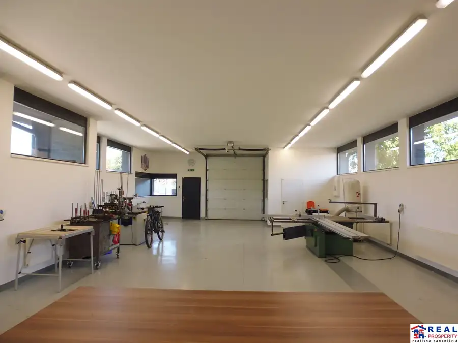
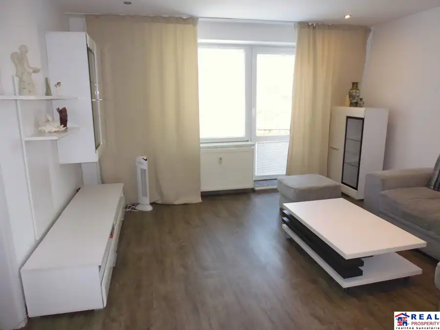
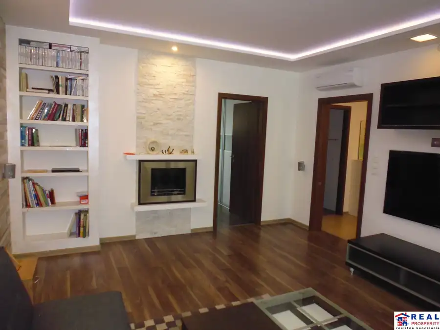

Obchodné reprezentačné priestory- areál pri hlavnej ceste - Kračúnovce
Kračúnovce
- Plocha100 m²
- Poschodie0.
- Vlastníctvoosobné
- Energetická triedaA
O nehnuteľnosti
REAL PROSPERITY ponúka na prenájom výnimočný, kompletne upravený a oplotený areál s dvoma vzájomne prepojenými nehnuteľnosťami, parkovacími a reklamnými plochami, situovaný priamo pri hlavnej ceste v obci Kračúnovce.
Ide o moderný areál vhodný pre podnikanie, obchod, kancelárske zázemie, skladovanie, ľahšiu výrobu alebo kombináciu podnikania s bývaním.
DVE NEHNUTEĽNOSTI V JEDNOM AREÁLI
1. DVOJPODLAŽNÁ NOVOSTAVBA
kolaudácia/zápis stavby: júl 2025
celková výmera: 100 m²
veľká terasa: 25 m²
moderné obchodné a kancelárske priestory
možnosť využitia aj na bývanie spojené s podnikaním
3 × WC s umývadlom
sprchovací kút
sklad/izba
kancelária
reprezentatívny obchodný priestor so svetelnou stenou
veľká terasa
podlahové vykurovanie
komfortné vnútorné prostredie s možnosťou diaľkového ovládania systému cez mobil
Nájomné: 1.000€/mesiac + energie
2. SKLADOVÁ HALA SO ZÁZEMÍM
zastavaná plocha: 164 m²
úžitková plocha: 140 m²
vhodná na skladové alebo výrobné využitie
pancierová podlaha vhodná aj pre vysokozdvižné vozíky
vykurovaná hala a kancelárske zázemie
kancelária s pultom
kuchynská linka s nerezovým drezom, indukčnou doskou a digestorom
samostatné WC
elektrické zásuvky po obvode stien vrátane nízkeho a vysokého napätia
fasáda s možnosťou umiestnenia svetelnej reklamy
automatická vstupná brána
Nájomné: 1.400€/mesiac + energie
⭐ CELÝ AREÁL ZA ZVÝHODNENÚ CENU
Obe nehnuteľnosti spolu: iba 1.900€/mesiac + energie
Namiesto prenájmu dvoch oddelených priestorov získate ucelené podnikateľské zázemie v jednom oplotenom areáli – sklad, výrobný priestor, kancelárie, obchodné priestory aj zázemie.
MODERNÝ A BEZPEČNÝ AREÁL
kompletne oplotený a upravený areál
bezbariérový vstup
vstupné dvere s elektronickými zámkami
možnosť vstupu pomocou PIN kódu alebo diaľkového ovládania
automatická vstupná brána
bránu je možné ovládať aj prostredníctvom mobilného telefónu
priame napojenie areálu na hlavnú/štátnu cestu
PARKOVANIE
Celkovo až 13 parkovacích miest:
približne 8 parkovacích miest priamo v areáli
ďalších 5 parkovacích miest pred vstupom do areálu, pozdĺž hlavnej cesty
TRI MOŽNOSTI VYKUROVANIA
Veľkou výhodou objektu je variabilita vykurovania.
K dispozícii sú:
plynové vykurovanie
vykurovanie drevom
vykurovanie drevenými peletami
Systémy sú vybavené termostatickým riadením, takže spôsob vykurovania je možné prispôsobiť aktuálnym potrebám a nákladom.
NÍZKE PREVÁDZKOVÉ NÁKLADY
Objekt je navrhnutý s dôrazom na úspornú prevádzku:
LED osvetlenie
kvalitné zateplenie s najvyšším stupňom energetickej/certifikačnej úrovne podľa použitej dokumentácie
vlastná studňa
obecná kanalizácia
samostatný elektromer
viacero možností vykurovania
ohrev teplej vody elektricky alebo prostredníctvom vykurovacieho systému
STRATEGICKÁ POLOHA
Areál sa nachádza priamo pri hlavnej ceste v Kračúnovciach, s pohodlným vjazdom priamo z komunikácie.
Výborná viditeľnosť zároveň ponúka možnosť využitia fasády na svetelnú reklamu, čo je významnou výhodou pre obchod, služby alebo firemné sídlo.
PRE KOHO JE AREÁL IDEÁLNY?
✔ obchod a predajňa
✔ showroom
✔ kancelárie
✔ skladovanie
✔ ľahká výroba
✔ e-shop a logistické zázemie
✔ firemné sídlo
✔ kombinácia obchodu, kancelárie a skladu
✔ podnikanie spojené s bývaním
Nevhodné na: autodielňu, pneuservis a skladovanie olejov
CENA
Hala: 1.400€/mesiac + energie
Dvojpodlažná novostavba: 1.000€/mesiac + energie
Kaucia: 2-mesačné nájomné
NAJLEPŠIA PONUKA
CELÝ AREÁL – OBE NEHNUTEĽNOSTI SPOLU: 1.900€/MESIAC + ENERGIE
K dispozícii máte moderný, bezpečný a reprezentatívny areál pri hlavnej ceste s parkovaním, skladovým priestorom, kanceláriami, obchodným priestorom, terasou a flexibilným vykurovaním.
V prípade záujmu volajte na t.č.:
- Jana Marková
Našu kompletnú ponuku nehnuteľností nájdete na
www.realprosperity.sk
Parametre
| Celková rozloha | 125 m² |
|---|---|
| Úžitková plocha | 100 m² |
| Poschodie | prízemie |
| Vlastníctvo | osobné |
| El. napätie | 230/400V |
| Plyn | áno |
| Kúpeľňa | sprchovací kút |
| Vykurovanie | vlastné – kombinované |
| Terasa | áno |
| Parkovanie | vlastné vyhradené |
| Postavené z | Zmiešané |
| Zateplený objekt | áno |
| Klimatizácia | áno |
| Energetický certifikát | A |
| Novostavba | áno |
| Dátum zverejnenia | 7. 9. 2026 |
Kde to je
Mohlo by Vás zaujímať

Nebytové priestory10 1 400 €Hala: reprezentačný podnikateľský areál pri hlavnej ceste-Kračúnovce Kračúnovce 140 m² REAL PROSPERITY ponúka na prenájom výnimočný, kompletne upravený a oplotený areál s dvoma vzájomne prepojenými nehnuteľnosťami, parkovacími a…
Byt10 177 000 €2-izbový tehlový byt s balkónom Prešov - predaj Prešov 2-izbový57 m²1. podlažie TEHLOVÝ S BALKÓNOM KOMPLETNE ZREKONŠTROVANÝ A ZARIADENÝ JANOUŠKOVA: Prešov - širšie centrum VÝMERA: 57 m2 DISPOZÍCIA: chodba, šatník, kúpeľňa s WC,…
Byt10 Cena dohodouPREDAJ: 4-izbový byt 95 m2 + loggia-vlastné vykurovanie, klimatizácia Prešov 4-izbový95 m²1. podlažie Tento zrekonštruovaný a zariadený 4-izbový byt sa nachádza v tichej lokalite plnej zelene na ulici Alexandra Matušku na sídlisku Sekčov v Prešove.…